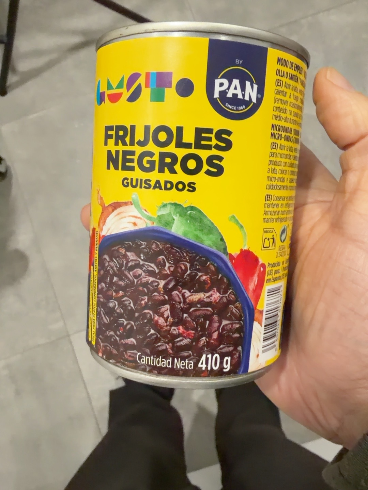
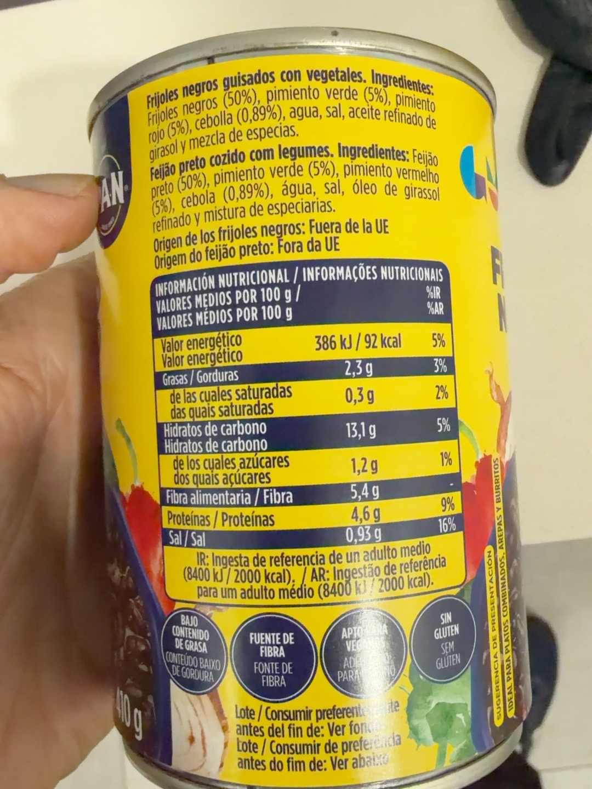

Frijoles negros guisados
Frijoles negros guisados con vegetales, listos para calentar.
Contenido total, incluida la salsa; no es peso escurrido.
Precio de referencia
1,90 € · 4,63 €/kg
Dónde lo compro
Carrefour
30/09/2026 · Oferta 3×2: aprox. 1,27 €/lata · 3,09 €/kg
Lo uso en
Por qué lo uso
Ya llevan cebolla y pimientos, así que me ahorro preparar otro sofrito. Buena composición, valor nutricional y puntuación en Yuka.
Los utilizo con su salsa para el relleno de los burritos.
En mi cocina
En los burritos vierto la lata completa, sin escurrir ni enjuagar, y dejo espesar la salsa en la sartén antes de mezclar con la quinoa y el edamame.
Composición
frijoles negros (50 %), pimiento verde (5 %), pimiento rojo (5 %), cebolla (0,89 %), agua, sal, aceite refinado de girasol, mezcla de especias.
Valores por 100 g
| Energía | 386 kJ / 92 kcal |
|---|---|
| Grasas | 2,3 g |
| De las cuales saturadas | 0,3 g |
| Hidratos de carbono | 13,1 g |
| De los cuales azúcares | 1,2 g |
| Fibra | 5,4 g |
| Proteínas | 4,6 g |
| Sal | 0,93 g |

Valoración de Yuka
90 / 100 · Excelente
Yuka destaca la ausencia de aditivos, la fibra y la proporción que clasifica como verduras. Señala la sal como aspecto negativo.
Aspectos positivos según Yuka
- Aditivos · Sin aditivos: Sin sustancia peligrosa
- Fibra · 5,4 g por 100 g: Excelente cantidad de fibras
- Verduras · 61 %: Buena cantidad
- Proteínas · 4,6 g por 100 g: Algunas proteínas
- Valor energético · 92 kcal por 100 g: Bajo en calorías
- Grasas saturadas · 0,3 g por 100 g: Bajo en grasas saturadas
- Azúcar · 1,2 g por 100 g: Bajo en azúcar
Aspectos negativos según Yuka
- Sal · 0,93 g por 100 g: Bastante salado
Fuente: captura de Yuka aportada el 15/10/2026.
Ingredientes y tabla nutricional del envase
